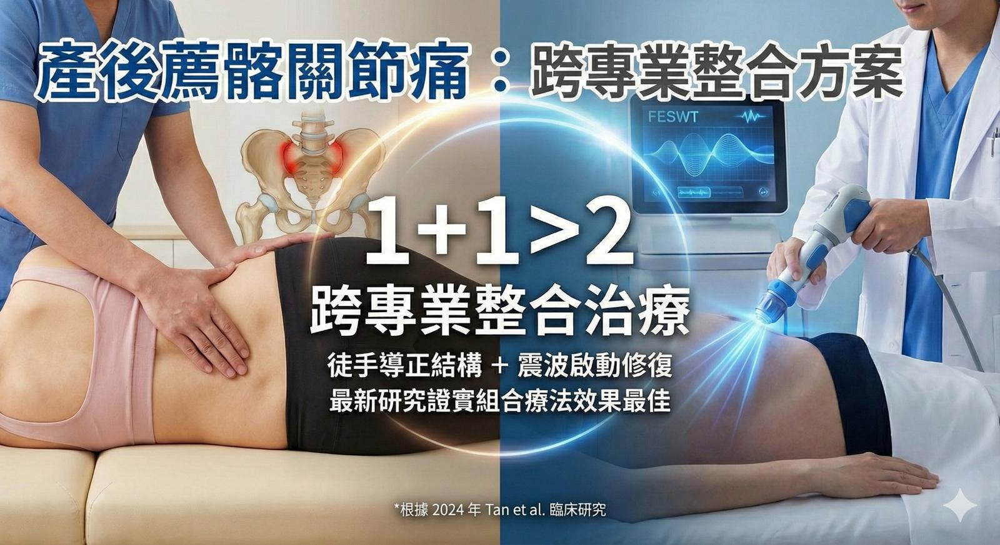

產後腰痛久治不癒？因為妳可能需要「1+1 > 2」的跨專業整合治療！
產後腰痛久治不癒？因為妳可能需要「1+1 > 2」的跨專業整合治療！
——徒手導正結構＋震波啟動修復，最新研究證實組合療法效果最佳
產後媽媽常面臨一個困境：看了骨科吃藥還是痛，去按摩放鬆完隔天又緊回來。
這不是治療沒效，而是產後的「 #薦髂關節功能障礙 (SIJD)」太複雜，單一手段往往孤掌難鳴。
根據 2024 年最新的臨床研究 (Tan et al.) 發現：面對產後薦髂關節問題，「徒手治療 (Manual Therapy)」結合「聚焦式體外震波 (FESWT)」，治癒率高達 **73.3%**，遠高於單打獨鬥的效果 。
這正是我們堅持「跨專業合作」與「中西整合」的原因！
🤝 為什麼需要不同專業的合作？
🔹 這一步，交給現代醫學儀器 (震波 FESWT)研究顯示，震波能像「生物調節劑」一樣，針對深層組織促進新生血管形成，釋放抗發炎因子 。它能快速緩解疼痛，特別是在治療的第一週，對於功能的恢復（如翻身、走路）效果顯著 。
研究指出針對建議的 4 個關鍵點進行精準施打（如髂後上棘、坐骨粗隆等）。
🔹 這一步，交給精準徒手/中醫傷科
儀器負責修復軟組織，但「骨骼關節的微小偏移」與「筋膜的張力平衡」需要靠人手來調整。透過徒手與針灸治療，能有效導正骨盆位置，鞏固震波帶來的修復效果，避免症狀反覆。
📍 我們的治療地圖：中西醫視角的精準對接
無論是執行徒手治療與針灸或是震波（由醫師/物理治療師執行），主要鎖定骨盆的 4 大關鍵區域：
1. 後側核心 (髂後上棘 ≒ 八髎穴區)：解決深層腰骶痠痛 。
2. 承重底座 (坐骨粗隆 ≒ 承扶穴深層)：處理久坐疼痛與腿後肌拉扯 。
3. 前側張力 (髂前上棘 ≒ 維道/居髎穴)：改善骨盆前傾與小腹突出 。
4. 腹股溝區 (髂恥隆起 ≒ 沖門穴區)：改善恥骨聯合與該邊的不適 。
🚀 給產後媽媽的最佳方案
不用在「看西醫」還是「看中醫」之間猶豫，人體就是人體，醫學就是應用在人體上的醫學。
最理想的治療，是透過專業間的合作，結合細膩的徒手結構調整與高科技的震波修復。
如果您正受產後疼痛困擾，歡迎來找我們評估。我們會以跨專業合作與整合的背景為後盾，提供精準的徒手治療，並在需要時協助轉介或協同進行震波治療，打造最完整的修復計畫！
---
PS. 每種治療手段都有其適用範圍，弄清楚使用規則，範圍內的當用則用，範圍外的該合用就合用。超出自己能力範圍，就找其他專業來合作或轉診。這才是身為專業醫療人員該有的態度。
#薦髂關節 #骨盆 #產後修復 #中西醫結合 #跨專業合作 #體外震波 #FESWT
太初中醫診所 東門中醫
中醫師 黃彥鈞
